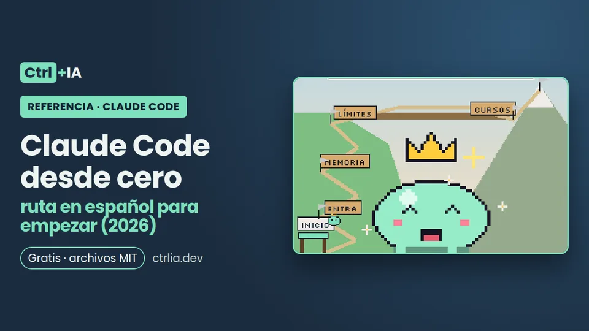

Referencia · Básico · 10 min
Claude Code desde cero: ruta en español para empezar (2026)
Ruta de 10 pasos para aprender Claude Code en español: qué es, qué necesitas, instalarlo, tu primera tarea real y los cursos oficiales gratis explicados.

Probado con Claude Code 2.1.316 · revisado
Ver los archivos en GitHub Gratis · licencia MIT
Resumen
¿Por dónde empiezo con Claude Code? Por aquí. Esta página explica en dos párrafos qué es Claude Code y qué necesitas para usarlo, y luego te da una ruta de 10 pasos en orden, cada uno con su objetivo, el comando clave y la receta de Ctrl+IA que lo desarrolla, probada con la versión 2.1.316. Después, tu primera tarea real en 10 minutos, una guía en español de los dos cursos oficiales gratuitos de Claude Academy y qué aprender cuando la ruta te salga sola. Se lee en 10 minutos, no es un vídeo de seis horas. La ruta en Markdown, una lista para marcar tu progreso y un proyecto de práctica están en el repositorio ctrlia-empieza-aqui.
Qué es Claude Code (y qué no es)
Claude Code es la herramienta de programación con agentes de Anthropic: lee tu proyecto, edita archivos, ejecuta comandos y se integra con tus herramientas de desarrollo. Según la documentación oficial está disponible en la terminal, en extensiones para IDE (VS Code y JetBrains), en una app de escritorio y en el navegador.
No es un autocompletado: le describes una tarea en lenguaje natural («escribe tests para el módulo de autenticación, ejecútalos y arregla los fallos») y él planifica, cambia varios archivos y comprueba el resultado, pidiéndote permiso según el modo que elijas. Tampoco es el chat de claude.ai: el chat conversa contigo; Claude Code trabaja sobre los archivos de tu carpeta. Todas las superficies usan el mismo motor, así que tu CLAUDE.md, tu configuración y tus servidores MCP valen en todas. Si dudas entre terminal, app de escritorio, Cowork o la web, la comparativa ¿Qué Claude abrir? te lo resuelve en una tabla.
Qué necesitas antes de empezar
- Una cuenta que incluya Claude Code. El plan Free de claude.ai no lo incluye; está en Pro, Max, Ultra, Team y Enterprise, o puedes pagar por uso con una clave de API de Claude Console. Precios oficiales y qué plan elegir en ¿Claude Code es gratis?.
- Un sistema compatible: macOS, Linux, WSL o Windows nativo. En Windows se recomienda Git for Windows para que Claude Code pueda usar Bash; si no lo tienes, usa PowerShell. No hace falta Node.js con el instalador nativo.
- Un proyecto pequeño que conozcas bien. La propia guía de la app de escritorio recomienda empezar así porque es la forma más rápida de ver lo que puede hacer. Si no tienes uno a mano, el repositorio trae
proyecto-practica/.
Un aviso honesto: si en tu país no está disponible la suscripción, no recomendamos rodeos con VPN; consulta la lista oficial de países de Anthropic.
La ruta en 10 pasos (en este orden)
- Elige plan o API. Receta: ¿Claude Code es gratis?
- Instálalo. En macOS, Linux y WSL,
curl -fsSL https://claude.ai/install.sh | bash. En Windows sigue Instalar Claude Code en Windows, que distingue PowerShell, CMD y WSL. - Primera sesión.
cd tu-proyecto,claude, inicia sesión y pide «explícame la estructura de este proyecto». Detalle en la sección siguiente. - Dale memoria. Crea un CLAUDE.md corto con
/inity recórtalo. Receta: Un CLAUDE.md que funciona - Controla qué puede hacer. Modos de permiso y reglas allow/ask/deny en Permisos de Claude Code, y un hook que bloquee lo peligroso en Hooks de seguridad.
- Trabaja en tu editor si lo prefieres. Receta: Claude Code en VS Code
- Guarda procedimientos repetidos como skills con Crea tu primera skill, e instala solo las que valen la pena: Skills que instalar.
- Conecta herramientas externas con MCP. Receta: MCP para programadores
- Divide el trabajo con subagentes para ahorrar contexto. Receta: Subagentes
- Automatiza revisiones de PR en GitHub Actions. Receta: Revisión de PR con GitHub Actions
Cuando algo falle, ve a Errores comunes de Claude Code; si quieres seguir desde el móvil, a Remote Control en el celular.
Instalar en macOS, Linux o WSL (instalador nativo oficial):
curl -fsSL https://claude.ai/install.sh | bash
# abre una terminal nueva y comprueba
claude --versionInstalar en Windows PowerShell:
irm https://claude.ai/install.ps1 | iexTu primera tarea real en 10 minutos
- Abre una terminal en tu proyecto y ejecuta
claude. La primera vez te pide iniciar sesión: elige tu cuenta de claude.ai (suscripción) o Console (API). - Comprueba con
/statusqué cuenta y qué modelo usa. Ojo: si tienes la variableANTHROPIC_API_KEYdefinida, Claude Code usará esa clave y te cobrará por API aunque pagues un plan. - Empieza por preguntas de solo lectura: «¿qué hace este proyecto y cómo se ejecutan los tests?».
- Después pide algo pequeño y verificable: «busca un comentario TODO y resuélvelo, luego ejecuta los tests».
- Lee cada cambio antes de aceptarlo; en modo Manual Claude te muestra el diff y espera tu aprobación.
- Al terminar, pide «haz commit con un mensaje descriptivo» y revisa el mensaje.
Para ver qué ocupa tu contexto usa /context, para tu consumo /usage, y /clear cuando cambies de tema. Si te equivocas, /rewind vuelve a un punto anterior de la conversación y del código (checkpoints).
cd tu-proyecto
claude
# dentro de la sesión:
/status # cuenta, plan y modelo en uso
/init # crea un CLAUDE.md inicial
/context # qué ocupa la ventana de contexto
/usage # consumo y límites del planY una tarea sin interfaz (modo headless) con resultado en JSON, que comprobamos el 1-nov-2026 (la salida trae result, total_cost_usd, duration_ms y num_turns):
claude -p "Resume en 5 líneas qué hace este repositorio" --output-format json \
| python3 -c "import json,sys; d=json.load(sys.stdin); print(d['result']); print('coste estimado USD:', d['total_cost_usd'])"Los cursos oficiales gratuitos de Claude Academy, explicados
La documentación oficial enlaza Claude Academy como «cursos gratuitos a tu ritmo». Hay dos de Claude Code, los dos en inglés:
| Curso | Duración | Qué cubre | Requisitos | Qué receta lo amplía |
|---|---|---|---|---|
| Claude Code 101 | 12 lecciones, 1,5 h, cuestionario e insignia | Qué es Claude Code, tu primer prompt, flujos diarios y personalización | Familiaridad básica con un editor y la línea de comandos; cuenta Pro, Max, Team o Enterprise, o clave de API | Toda la ruta (no es una equivalencia lección a lección) |
| Claude Code in Action | 9 lecciones, 1 h, cuestionario e insignia | Sesiones largas, un CLAUDE.md que se respete, skills de verificación, modos de permiso, hooks, routines y modo headless, GitHub Actions y Code Review, verificar ejecuciones sin supervisión y plugins | Ya usas Claude Code y conoces Git | Paso 4 (CLAUDE.md), 5 (permisos y hooks), 7 (skills y plugins) y 10 (GitHub Actions) |
Revisamos los cursos por su página pública (lecciones y duración); no los completamos.
Qué aprender después (nivel pro)
Cuando la ruta básica te salga sola, estos son los temas que separan a quien usa Claude Code de quien lo domina, todos documentados oficialmente:
- Modo plan (
Shift+Tabo--permission-mode plan) para acordar el enfoque antes de tocar código. - Modo automático: un clasificador revisa las acciones y bloquea las arriesgadas en lugar de preguntarte.
- Sesiones en paralelo con
claude --worktreepara que varias tareas no se pisen. - Modo headless (
claude -p "…" --output-format json) para scripts y cron. - Sesiones en la nube con
claude --cloudy--teleport. - Control remoto desde el móvil: Remote Control.
Si vienes de otra herramienta, la comparativa Claude Code vs Codex vs Gemini vs Cursor explica cómo medir Claude Code frente a Codex CLI, Antigravity CLI (antes Gemini CLI) y Cursor con la misma tarea. Y si quieres usar modelos locales o de otros proveedores, mira Ollama y OpenRouter.
Revisa esta página cada mes: Claude Code publica versiones casi a diario y la ruta lleva fecha de revisión.
Todos los contenidos, en orden
Esta es la biblioteca completa de Ctrl+IA en el orden en que conviene leerla.
Empezar
- ¿Claude Code es gratis? Precio y qué plan elegir (2026)
- Instalar Claude Code en Windows: nativo, WSL y errores típicos
- Claude Code vs Desktop vs Cowork vs claude.ai: cuál usar
- Cómo empezar con Claude Code en un proyecto: checklist de 15 min
- Claude Code en VS Code: extensión o terminal y cómo instalarlo
- Claude Code en JetBrains, Visual Studio, Xcode, Zed y Neovim
- Claude Code en español y sin relleno: language y estilo Concise
Memoria e instrucciones
- Generador de CLAUDE.md y AGENTS.md en español, gratis
- Cómo hacer un CLAUDE.md que Claude Code sí respete
- AGENTS.md vs CLAUDE.md en Claude Code: cuál lee y cómo usar ambos
- Plantilla de proyecto para Claude Code: repo listo y seguro
Control y seguridad
- Permisos de Claude Code: deja de aprobar cada comando
- Antes de darle permisos a Claude Code: checklist de seguridad
- Modo automático de Claude Code a fondo: clasificador y reglas
- Hooks de Claude Code: bloquea comandos peligrosos y secretos
- Comprobador de settings.json de Claude Code: detecta riesgos
El día a día
- Modo plan de Claude Code: planifica antes de tocar código
- /clear vs /compact en Claude Code y la compactación en reposo
- Límite de uso de Claude Code: haz que tus 5 h y la semana duren
- Statusline de Claude Code: modelo, contexto y límites en vivo
- Opus 5.5 vs Sonnet 5.5 vs Haiku 5.5 en Claude Code: cuál usar
- Claude Code Opus 4.8: el modo rápido acaba el 30-nov, pasa a 5.5
- 5 comandos de Claude Code imprescindibles, listos para copiar
- Comandos de Claude Code: chuleta de slash, atajos y flags
Ampliar Claude Code
- Claude Code skills vs hooks, MCP, subagentes y plugins: cuál usar
- Crea tu primera skill de Claude Code paso a paso
- Skills de Claude Code: cuáles instalar, cómo y cuáles evitar
- Antes de instalar plugins, skills o MCP en Claude Code: checklist
- Crear un plugin de Claude Code: init, prueba, eval y marketplace
- MCP en Claude Code: conecta Playwright, GitHub y tu base de datos
- Subagentes de Claude Code: divide el trabajo y ahorra contexto
Flujos de trabajo pro
- TDD con Claude Code: rojo, verde y refactor sin trampas
- Depurar un bug con Claude Code: del error al test de regresión
- Refactorizar código legado con Claude Code sin romper nada
- Antes de fusionar código de Claude Code: checklist de revisión
- Claude Code worktree: varios agentes en paralelo sin pisarse
- Claude Code headless: claude -p en scripts y cron paso a paso
- Revisa cada pull request con Claude Code en GitHub Actions
- Claude Code en el celular: Remote Control paso a paso y riesgos
Comparar y resolver problemas
- Claude Code vs Codex vs Gemini vs Cursor: misma tarea, con datos
- Claude Code gratis con Ollama u OpenRouter: qué funciona
- Errores de Claude Code: 529, 401, 403, límites y cómo arreglarlos
Preguntas frecuentes
¿Claude Code es gratis?
No. El programa se instala sin pagar, pero para usarlo necesitas Pro, Max, Ultra, Team o Enterprise, o una clave de API de pago por uso. El plan Free de claude.ai no lo incluye. Detalles y precios oficiales en la receta ¿Claude Code es gratis?.
¿El curso oficial está en español?
No. Claude Code 101 y Claude Code in Action están en inglés en academy.claude.com. Esta página resume en español qué enseña cada curso y qué receta de Ctrl+IA lo amplía. La documentación oficial sí tiene versión en español en code.claude.com/docs/es.
¿Necesito saber programar?
Para sacarle partido, sí: tienes que entender lo que cambia y saber ejecutar tests. Claude Code 101 pide familiaridad básica con un editor y la línea de comandos. Para tareas que no son de código, Anthropic ofrece Cowork, que no necesita terminal (ver ¿Qué Claude abrir?).
¿Terminal, VS Code o app de escritorio?
Es el mismo motor. La terminal es la superficie más completa (scripting y Agent SDK solo están en la CLI); VS Code da diffs en línea; la app de escritorio, revisión visual y sesiones en paralelo. Puedes mezclarlas en el mismo proyecto.
¿Funciona en Linux?
Sí. La CLI funciona en Linux con el instalador nativo o con apt, dnf o apk. La app de escritorio para Linux está en beta para Ubuntu y Debian.
¿Cómo hago que me responda siempre en español?
Escríbelo en tu CLAUDE.md de usuario (~/.claude/CLAUDE.md), por ejemplo «Responde siempre en español». Comprueba el resultado en una sesión nueva.